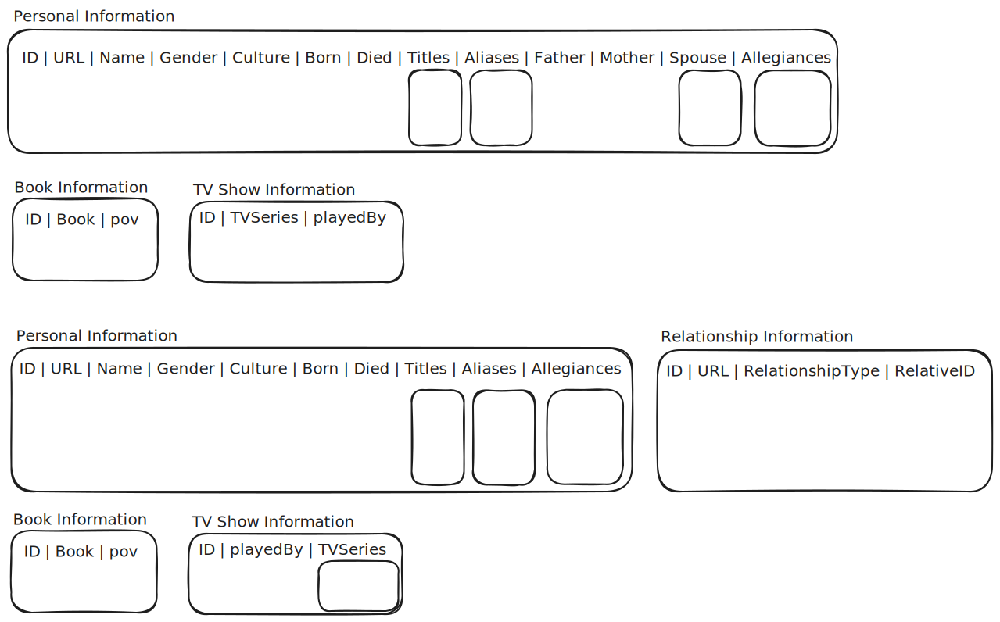

erDiagram
EMPLOYEE {
int ID PK
string first
string last
string middle
string address
string phone
int ssn
}
BACKGROUND_CHECK {
int ID PK
int EMPLOYEE_ID FK
date date
string results
}
TAX_INFO {
int ID PK
int EMPLOYEE_ID FK
int year
float withholding
}
TRAINING {
int ID PK
int TRAINING_TYPE
int EMPLOYEE_ID FK
float score
}
EMP_AGREE {
int ID PK
int EMPLOYEE_ID FK
int POSITION_ID FK
int POSITION_TYPE
date START_DATE
date END_DATE
int benefits_class
float pay_hourly_equiv
float hours_wk
int pay_period
}
ORG_REL {
int ID PK
int EMPLOYEE_ID FK
int SUPERVISOR_ID FK
}
EMPLOYEE }|--|| EMP_AGREE : has
EMPLOYEE }|--|| ORG_REL : has
EMPLOYEE ||--|{ TAX_INFO : has
EMPLOYEE ||--|{ TRAINING : has
EMPLOYEE ||--|{ BACKGROUND_CHECK : has
accTitle: Sample Company Employee-related Records
accDescr {
This diagram contains information about corporate records relating to a single employee, such as employee details, supervisory relationships, employment agreement details, training records, tax information, and background checks.
}
34 Record-based Data and List Processing Strategies
Chapter 33 introduces how XML and HTML documents are constructed and demonstrates different techniques for scraping data from the web.
Chapter 35 introduces Application Programming Interfaces (APIs) to get data from the web in a cleaner, more efficient way. Web-based data often uses different formats, like JSON (JavaScript Object Notation), to provide data from requests in a structured way. Before we can effectively use APIs, it helps to review some basic patterns and methods for working with record based data and converting it into the rectangular data that most statistical analyses are built around.
Prerequisites
- Working knowledge of data wrangling techniques (Chapter 23, Chapter 24, Chapter 25)
- Familiarity with table joins (Chapter 27)
- Familiarity with functional programming (Chapter 29)
- Familiarity with XML file structures (Chapter 33)
This chapter will assume that you’ve used (or at least seen) techniques like split-apply-combine or map-reduce, anonymous functions, and table joins (full, left, right, inner) and similar techniques before. Here, we will focus on how these strategies apply specifically to record-based, hierarchically formatted data that is often found in XML and JSON files.
Objectives
- Differentiate between tabular and record-based data structures
- Develop strategies to transform record-based data into tabular data
- Recognize situations where multiple linked tables or nested list-columns may be required to represent the data effectively in a tabular format
- Transform data in record-based formats such as XML and JSON into single or multiple linked rectangular data tables.
- Implement data cleaning and quality control measures to ensure that data is read in and transformed correctly and important information is not lost.
34.1 Data Models
If you are reading this book, chances are you’re approaching programming from a more statistical or data-sciency point of view, rather than as a computer scientist. As a result, you probably have a general expectation that data will be laid out in a rectangular form, with rows representing observations or individuals and columns representating variables, measurements, or other dimensions of data which are applicable to each observation or individual.
This is an assumption which is much more common (at least in my experience) in statistics than in computer science more generally, though of course there are statisticians working on all sorts of different data types, including those we will discuss here.
34.1.1 Relational Data
Relational data is a particular type of data model that assumes table-based data storage. That is, when we access data in spreadsheets, CSVs, and so on, we are working with relational data. In computer science terms, a relation consists of a heading and a body.
- The heading defines a set of attributes that have a name and a data type (mathematically, a domain).
- The body is a set of tuples (a tuple is a collection of \(n\) values, and is a formal data type in Python, but not in R), where there are as many values as are defined in the heading.
This is all an abstract way of describing the composition of a Data Frame, as this book did in Section 11.6, where a DataFrame is a heterogeneous list of columns where:
- Every entry in each column must have the same data type
- Every column must have the same number of rows
In a relational model, a record typically corresponds to a row of the data – in statistical terms, an observation (especially if our relational table is in tidy form).
Not every record-based system is relational, however. Let’s examine a few other structures.
34.1.2 Record-based Data Models
Before the relational data model became popular, however, there was the hierarchical data model. In the 1960s, computers began to be utilized for data storage, and this naturally led to record-based data models.
In a record-based data model, data are stored as records that are a collection of fields, where each field is a single value with an associated (usually fixed length/size) type. The fields in a record determine the record’s type.
34.1.2.1 Hierarchical Data Models
A generic entity or class can be defined as a collection of fields in a more formal object-oriented hierarchical representation. Links connect records with associated records, forming a tree.
This type of data structure is incredibly common, but it does not always (easily) reduce to tabular data. In many cases, though, it is possible to represent hierarchical data as a set of tables that relate to each other through keys.
Demo: Hierarchical Employee Data
When a company hires an employee, many different records may be generated:
- employee information (name, address, phone number, ssn)
- initial paperwork (background check, tax information)
- training history
- employment agreement details (position type - permanent/contract/intern, start date, benefits, pay amount, which position the employee reports to)
In the pre-computer days, you can imagine that each set of records might be kept alphabetized by the most important field (employee name, in many cases, position in others) in separate filing cabinets. When computers entered the picture, the most direct translation was to build a hierarchical set of records with a structure much like the file cabinets - each set of information was kept with other records of its type, and these records could be linked together – usually, by following direct relational links between different forms. SAP, which is a very common enterprise data management system, still works this way - you pull up a record, and then click on linked records to navigate between different forms in the system.
In record-based data models, it can be complicated to actually do anything with the set of records. It might be relatively easy to e.g. list out all employees, but other related tasks, like determining how many people one individual is supervising, may require sifting through every ORG_REL record and could be complicated by how the records are stored (are they all text files in folders by employees?). Record-based data models, whether hierarchical or not, were originally a digital extension of physical records (think rows of file cabinets in old movies).
Note that it is a relatively simple step between a hierarchical data model and a relational data model with separate tables for each record type. This isn’t shocking, if only because the relational data model where tables are joined together is a direct descendant of the hierarchical form-based data model described here.
Example: Hierarchical Employee Data
Read in this XML file of sample employee data and
Assemble a table of all of the employee information in Figure 34.1 (that is, ID, first, middle, and last name, address, phone number, and social security number).
- Can you do this using data processing functions like
map_dfrandas_listin R orread_xmlin pandas (you’ll have to use chained operations in R and custom arguments in python)? - Identify any employees with an invalid social security number using your tabular data representation.
- Can you do this using data processing functions like
Identify the supervisor who has the most people reporting to them, without converting the data to tabular format, and then retrieve a list of all of that person’s direct reports as employee IDs.
Identify whether there are any employees who took the same training twice, without converting the data to tabular format.
Do you prefer to work with tabular data or hierarchical data? Why?
library(xml2)
library(purrr)
library(dplyr)
library(stringr)
info <- read_xml("../data/sample_employee_data.xml")
records <- xml_find_all(info, "//*/EMPLOYEE")
df <- records |>
as_list() |>
map_dfr(~.x |>
unlist(recursive = T) |>
t() |>
as.data.frame() |>
set_names("id", "first", "last", "middle",
"address", "phone", "ssn")
) |>
mutate(valid_ssn = str_count(ssn, "\\d")==9)
head(df)
## id first last middle
## 1 2824 Michael Phillips E
## 2 1409 William Gonzalez B
## 3 5506 Donald Watts L
## 4 5012 Erica Johnson C
## 5 4657 William Townsend D
## 6 3286 Mark Fernandez J
## address phone
## 1 341 Bonilla Extensions\nLake Jacktown, VA 72058 +1-701-028-0259x700
## 2 85759 Danielle Lights\nLake Anthonymouth, SD 72346 540.044.8808x1629
## 3 68711 Janet Wall\nMcdonaldmouth, MT 77414 +1-059-051-0485
## 4 755 Brandon Mill Suite 800\nNorth Phillip, LA 12123 (680)650-9821x6860
## 5 00624 Johnson Harbor Apt. 211\nWoodwardchester, AK 03498 026-982-2613
## 6 910 Mathew Mall Suite 805\nSchwartzmouth, OK 23331 630.559.6490x275
## ssn valid_ssn
## 1 821097324 TRUE
## 2 394613566 TRUE
## 3 367179644 TRUE
## 4 330054170 TRUE
## 5 164054528 TRUE
## 6 297177301 TRUE
filter(df, !valid_ssn)
## id first last middle
## 1 7873 Susan Mason K
## 2 5552 Cameron Miller C
## 3 6635 Alexander Marsh A
## 4 5333 Kayla Parker M
## address phone
## 1 PSC 4488, Box 1248\nAPO AE 96883 152.806.9336x6388
## 2 0819 Douglas Drives Suite 857\nDicksonfort, WY 67373 001-727-389-3454x96815
## 3 94716 Karen Square\nSmithside, WA 74182 +1-126-214-2102x641
## 4 1921 David Spur\nNorth Sarah, IA 01256 549-226-0959x23219
## ssn valid_ssn
## 1 12078633 FALSE
## 2 9361578 FALSE
## 3 39197635 FALSE
## 4 69647139 FALSEThe purrr::pluck() function is a good way to pull out the information we need, once we convert the xml file to a list structure (which is still not a tabular form).
supervisors <- xml_find_all(info, "//*/ORG_REL/*")|>
as_list() |>
map_chr(~purrr::pluck(., "SUPERVISOR_ID", 1))
employees <- xml_find_all(info, "//*/ORG_REL/*")|>
as_list() |>
map_chr(~purrr::pluck(., "EMPLOYEE_ID", 1))
supervisor_reports <- supervisors |>
table() |> sort(decreasing = T)
employees[which(supervisors == names(supervisor_reports)[1])]
## [1] "1434" "4611" "3547" "6925"
# Just for context
filter(df, id%in%employees[which(supervisors == names(supervisor_reports)[1])])
## id first last middle
## 1 1434 Elizabeth Harris B
## 2 4611 Deanna Doyle C
## 3 3547 Sherri Warner T
## 4 6925 Christopher Jones P
## address
## 1 720 James Passage\nPort Justinfort, NC 55779
## 2 328 Kelley Junctions Suite 782\nNorth Jacqueline, PA 71278
## 3 280 Allen Highway Apt. 700\nSummerview, TX 62208
## 4 26004 Kelly Rest Apt. 898\nNew Katherine, OH 96504
## phone ssn valid_ssn
## 1 +1-448-259-7632x679 531909398 TRUE
## 2 001-272-144-5412x0950 226062294 TRUE
## 3 001-011-455-7532x304 228640945 TRUE
## 4 (195)612-9014x134 533899921 TRUEids <- xml_find_all(info, "//*/TRAINING/TRAININ/EMPLOYEE_ID")|> xml_text()
get_employee_training_type <- function(id) {
employee_training_xpath <- sprintf("//*/TRAINING/TRAININ/EMPLOYEE_ID[text()='%s']", id)
employee_training_nodes <- xml_find_all(info, employee_training_xpath)
training_type <- employee_training_nodes |>
xml_parent() |>
xml_child("TRAINING_TYPE") |>
xml_text() |>
unlist()
}
duplicates <- function(list) {
length(list) != length(unique(list))
}
dupe_employees <- map(unique(ids), get_employee_training_type) |>
map_lgl(duplicates)
unique(ids)[dupe_employees] |> as.numeric() |> sort()
## [1] 1106 2519 2584 2674 5506# This is how easy it is in tabular form...
training_str <- xml_find_all(info, "//*/TRAINING/TRAININ")|>
as_list() |>
map_dfr(~.x |>
unlist(recursive = T) |>
t() |>
as.data.frame() |>
set_names("id", "type", "employee_id", "score")
) |> group_by(employee_id) |>
summarize(n = n(), n_unique = length(unique(type))) |>
filter(n != n_unique)from bs4 import BeautifulSoup
import pandas as pd
df = pd.read_xml("../data/sample_employee_data.xml",
iterparse={"EMPLOYEE": ["id", "first", "last", "middle",
"address", "phone", "ssn"]})
df.head()
## first last ... phone ssn
## 0 Michael Phillips ... +1-701-028-0259x700 821097324
## 1 William Gonzalez ... 540.044.8808x1629 394613566
## 2 Donald Watts ... +1-059-051-0485 367179644
## 3 Erica Johnson ... (680)650-9821x6860 330054170
## 4 William Townsend ... 026-982-2613 164054528
##
## [5 rows x 6 columns]
# Invalid SSNs
df.query("~(ssn<=999999999 & ssn >= 100000000)")
## first last ... phone ssn
## 19 Susan Mason ... 152.806.9336x6388 12078633
## 27 Cameron Miller ... 001-727-389-3454x96815 9361578
## 36 Alexander Marsh ... +1-126-214-2102x641 39197635
## 37 Kayla Parker ... 549-226-0959x23219 69647139
##
## [4 rows x 6 columns]In order to not convert things to a tabular format, we have to use the xml library directly. This is annoying and a good vote in favor of using tabular formats instead of hierarchical stuff, particularly when pandas makes it easy to get the tabular format we need back out.
import xml.etree.ElementTree as ET
doc = ET.parse(r"../data/sample_employee_data.xml")
root = doc.getroot()
relationships = root.find("ORG_REL")
relationships = relationships.findall("ORG_RE")
# These get the employee ID and supervisor ID for every relationship listed
employees = pd.Series([e[1].text for e in relationships])
supervisors = pd.Series([e[2].text for e in relationships])
# Count # times supervisor ID appears in list
supervisors.groupby(supervisors).count().head()
## 1409 1
## 1434 1
## 1520 3
## 2139 1
## 2291 2
## dtype: int64
# Supervisor with most employees
busiest_sup = supervisors.groupby(supervisors).count().sort_values(ascending=False).index[0]
busiest_sup
## '3615'
# List of those employees
busiest_sup_employees = employees.loc[supervisors==busiest_sup]
busiest_sup_employees
## 16 1434
## 20 4611
## 28 3547
## 45 6925
## dtype: objectNow we tackle the training problem in a similar way, making use of the fact that we can group one series (training types) by another (employee ID) and the index of the grouped series will have the employee ID we want. This is right on the border of tabular data, and yes, I’m intentionally blurring the lines even further. Ultimately, what we want is to solve the problem.
trainings = root.find("TRAINING")
trainings = trainings.findall("TRAININ")
training_types = pd.Series([e[1].text for e in trainings])
training_empl = pd.Series([e[2].text for e in trainings])
multiple_trainings = training_types.groupby(training_empl).agg(lambda x: len(x) != x.nunique())
# Employees who took the same training multiple times
multiple_trainings.index[multiple_trainings.values]
## Index(['1106', '2519', '2584', '2674', '5506'], dtype='object')34.1.2.2 Network Data Models
In a hierarchical data model, each record has only one parent. This is, as it turns out, a fairly restrictive constraint, as in the real world, there can be many-to-many relationships that are not strictly hierarchical - imagine trying to represent genealogical data with the restriction that each node can have only one parent!
Another form of record-based data model is a network. This model allows many-to-many relationships between records and even reciprocal links between two or more records (a “cycle” in network terms).
Often, it is convenient to separately model the individual entities (“nodes”) in one table and the edges in another, when converting network data to something rectangular. In the case that edges are not directional (and thus cycles are not possible), it is often useful to impose a constraint to ensure that there is only one proper link between two nodes. One common constraint is a variant of “the ID of the first node is greater than the ID of the second”. When edges are directional, the order of the two nodes is useful, and no such constraints are required.
In both cases, extra information about the link between the two nodes may be included in additional columns in the ‘edge’ table.
34.1.2.2.1 Demo: Relationship Data Networks
In an attempt to demonstrate how complex a network data model can get, I asked ChatGPT to generate a data set of romantic relationships between Grey’s Anatomy characters over the show’s 21 seasons.
graph TD %% Meredith Grey MeredithGrey -- romantic --> DerekShepherd MeredithGrey -- romantic --> NathanRiggs MeredithGrey -- romantic --> AndrewDeLuca MeredithGrey -- romantic --> NickMarsh MeredithGrey -- one-night --> GeorgeOMalley MeredithGrey -- one-night --> SteveMurphy MeredithGrey -- one-night --> WilliamThorpe MeredithGrey -- one-night --> FinnDandridge %% Cristina Yang CristinaYang -- romantic --> OwenHunt CristinaYang -- romantic --> PrestonBurke CristinaYang -- one-night --> ShaneRoss %% Owen Hunt OwenHunt -- romantic --> CristinaYang OwenHunt -- romantic --> AmeliaShepherd OwenHunt -- romantic --> TeddyAltman OwenHunt -- flirtation --> EmmaMarling %% Alex Karev AlexKarev -- romantic --> IzzieStevens AlexKarev -- romantic --> JoWilson AlexKarev -- one-night --> LexieGrey AlexKarev -- one-night --> OliviaHarper AlexKarev -- one-night --> RebeccaPope %% Izzie Stevens IzzieStevens -- romantic --> AlexKarev IzzieStevens -- romantic --> DennyDuquette IzzieStevens -- romantic --> GeorgeOMalley %% George O'Malley GeorgeOMalley -- romantic --> CallieTorres GeorgeOMalley -- one-night --> MeredithGrey GeorgeOMalley -- romantic --> IzzieStevens GeorgeOMalley -- one-night --> OliviaHarper %% Callie Torres CallieTorres -- romantic --> GeorgeOMalley CallieTorres -- romantic --> EricaHahn CallieTorres -- romantic --> ArizonaRobbins CallieTorres -- one-night --> MarkSloan CallieTorres -- one-night --> PennyBlake %% Arizona Robbins ArizonaRobbins -- romantic --> CallieTorres ArizonaRobbins -- flirtation --> LaurenBoswell ArizonaRobbins -- flirtation --> CarinaDeLuca %% Mark Sloan MarkSloan -- romantic --> LexieGrey MarkSloan -- flirtation --> AddisonMontgomery MarkSloan -- one-night --> CallieTorres MarkSloan -- one-night --> TeddyAltman MarkSloan -- one-night --> ReedAdamson %% Lexie Grey LexieGrey -- romantic --> MarkSloan LexieGrey -- romantic --> JacksonAvery LexieGrey -- one-night --> AlexKarev %% Jackson Avery JacksonAvery -- romantic --> LexieGrey JacksonAvery -- romantic --> AprilKepner JacksonAvery -- romantic --> MaggiePierce JacksonAvery -- one-night --> JoWilson %% April Kepner AprilKepner -- romantic --> JacksonAvery AprilKepner -- romantic --> MatthewTaylor %% Jo Wilson JoWilson -- romantic --> AlexKarev JoWilson -- romantic --> JasonMyers JoWilson -- one-night --> JacksonAvery %% Andrew DeLuca AndrewDeLuca -- romantic --> MaggiePierce AndrewDeLuca -- romantic --> MeredithGrey %% Amelia Shepherd AmeliaShepherd -- romantic --> OwenHunt AmeliaShepherd -- romantic --> AtticusLincoln AmeliaShepherd -- romantic --> KaiBartley %% Maggie Pierce MaggiePierce -- romantic --> AndrewDeLuca MaggiePierce -- romantic --> JacksonAvery MaggiePierce -- romantic --> WinstonNdugu %% Teddy Altman TeddyAltman -- romantic --> OwenHunt TeddyAltman -- romantic --> TomKoracick TeddyAltman -- one-night --> MarkSloan %% Erica Hahn EricaHahn -- romantic --> CallieTorres %% Preston Burke PrestonBurke -- romantic --> CristinaYang %% Nathan Riggs NathanRiggs -- romantic --> MeredithGrey NathanRiggs -- romantic --> MeganHunt %% Levi Schmitt LeviSchmitt -- romantic --> NicoKim %% Nico Kim NicoKim -- romantic --> LeviSchmitt %% Miranda Bailey MirandaBailey -- romantic --> BenWarren %% Ben Warren BenWarren -- romantic --> MirandaBailey %% Richard Webber RichardWebber -- romantic --> EllisGrey RichardWebber -- romantic --> CatherineFox %% Ellis Grey EllisGrey -- romantic --> RichardWebber %% Catherine Fox CatherineFox -- romantic --> RichardWebber %% Tom Koracick TomKoracick -- romantic --> TeddyAltman %% Atticus Lincoln AtticusLincoln -- romantic --> AmeliaShepherd %% Nick Marsh NickMarsh -- romantic --> MeredithGrey
This is a directed graph – the edges are arrows, starting from the person initiating the relationship (presumably) and ending at the person who is the target of the relationship. There is an additional value on each edge that describes the type of relationship.
We can imagine describing this data in tabular form as follows, showing some of the nodes involving Meredith Grey to save space:
| Person1 | Person2 | type |
|---|---|---|
| MeredithGrey | DerekShepherd | romantic |
| MeredithGrey | NathanRiggs | romantic |
| MeredithGrey | AndrewDeLuca | romantic |
| MeredithGrey | NickMarsh | romantic |
| MeredithGrey | GeorgeOMalley | one-night |
| GeorgeOMalley | MeredithGrey | one-night |
| … | … | … |
Then, if we have additional data on each person, such as an astrological sign, we could also have a person table containing that information. We can then reshape and join these tables to create different tables that are suitable for different analyses.
If you’d like to play around with this data, there are two JSON files that contain all of the information you would need: relationships, and astrological signs (not all characters have known or imputed astrological signs, so there will be some missing data).
library(tibble)
library(dplyr)
library(tidyr)
library(purrr)
library(jsonlite)
sign_order <- c("Aries", "Taurus", "Gemini", "Cancer", "Leo", "Virgo", "Libra", "Scorpio", "Sagittarius", "Capricorn", "Aquarius", "Pisces")
relationships <- read_json("../data/greys-anatomy-data.json") |>
map_df(as_tibble)
astrology <- read_json("../data/greys-anatomy-astrology.json")
astrology <- tibble(Person = names(astrology), sign = unlist(astrology)) |>
mutate(sign = factor(sign, levels = sign_order, ordered = T))Since I don’t know anything about astrology, let’s start by examining whether certain astrological signs are more likely to have a certain type of relationship.
long_rels <- relationships |>
mutate(id = 1:n()) |>
pivot_longer(cols = 1:2)
rels_signs <- long_rels |>
left_join(astrology, by = c("value" = "Person"))
# Data that is left out
anti_join(long_rels, astrology, by = c("value" = "Person"))
anti_join(astrology, long_rels, by = c("Person" = "value"))
contingency_table <- table(long_rels$relationship, long_rels$sign)
## Error in table(long_rels$relationship, long_rels$sign): all arguments must have the same length
knitr::kable(contingency_table, caption = "Types of relationships, by astrological signs of the participants.", label = "tbl-grey-relationship-type-sign")
## Error: object 'contingency_table' not found
## # A tibble: 16 × 4
## relationship id name value
## <chr> <int> <chr> <chr>
## 1 one-night 6 target Steve Murphy
## 2 one-night 7 target William Thorpe
## 3 one-night 8 target Finn Dandridge
## 4 flirtation 14 target Emma Marling
## 5 one-night 18 target Olivia Harper
## 6 one-night 19 target Rebecca Pope
## 7 one-night 23 target Olivia Harper
## 8 one-night 27 target Penny Blake
## 9 flirtation 28 target Lauren Boswell
## 10 flirtation 29 target Carina DeLuca
## 11 one-night 33 target Reed Adamson
## 12 romantic 38 target Matthew Taylor
## 13 romantic 39 target Jason Myers
## 14 romantic 42 target Kai Bartley
## 15 romantic 43 target Winston Ndugu
## 16 romantic 45 target Nico Kim
## # A tibble: 0 × 2
## # ℹ 2 variables: Person <chr>, sign <ord>- 1
- Keep relationships together by adding an ID variable (for tracking data backwards after the pivot operation), and then pivot the first two variables into a “name” (source or target) and “value” (Person’s name) column, keeping relationship type and id as originally specified.
- 2
- Add in the person’s astrological sign. This is expected to be a many-to-one relationship – each person should have one astrological sign, but there may be many relationships specified for a single person in the table, as the show went on for 21 years.
- 3
-
We do a sanity check to see what data was left out of the join step in 2. This requires checking both the forward and backwards joins – the first shows the rows in
long_relsthat aren’t inastrology(because the characters don’t have astrological signs that are known), while the second shows the rows inastrologythat don’t have an equivalent inlong_rels(there aren’t any, in this case). Checking this ensures that you don’t accidentally lose data. - 4
- Create the contingency table showing relationship type in rows and astrological sign in columns.
This table has a lot of zeros, so I don’t think we’re going to be able to pull off a statistical analysis because the data is too sparse. Perhaps we could ask AI for similar data sets on the characters of House, ER, and other medical dramas, and then combine the data, if we wanted to proceed with a formal analysis. [1] provides demonstrations for how to analyze network data, if you are interested.
We can also just join both the source and the target in the same dataset to combine the information, as long as we are careful about renaming columns – the resulting contingency table is shown under the code chunk below. The sparsity of this data (we have 144 possible astrological combinations, and only 48 relationships) all but guarantees that we won’t be able to do any meaningful data analysis – Grey’s Anatomy just didn’t have enough relationships over 21 years for statistical purposes.
relationship_signs <- relationships |>
left_join(astrology, by = c("source" = "Person")) |>
rename(source_sign = sign) |>
left_join(astrology, by = c("target" = "Person")) |>
rename(target_sign = sign)
table(Source = relationship_signs$source_sign, Target = relationship_signs$target_sign) |>
knitr::kable(caption = "Relationships in Grey's Anatomy, by astrological sign of the initiating individual (rows) and the target (columns). Not all relationships are included as not all characters have known or imputed (by the actor's sign) astrological sign.")| Aries | Taurus | Gemini | Cancer | Leo | Virgo | Libra | Scorpio | Sagittarius | Capricorn | Aquarius | Pisces | |
|---|---|---|---|---|---|---|---|---|---|---|---|---|
| Aries | 0 | 0 | 0 | 0 | 0 | 0 | 0 | 0 | 0 | 0 | 0 | 0 |
| Taurus | 0 | 0 | 1 | 0 | 0 | 0 | 0 | 0 | 0 | 0 | 0 | 0 |
| Gemini | 1 | 1 | 0 | 0 | 1 | 0 | 0 | 0 | 2 | 0 | 0 | 0 |
| Cancer | 1 | 0 | 0 | 0 | 0 | 1 | 0 | 0 | 0 | 0 | 0 | 0 |
| Leo | 1 | 0 | 0 | 0 | 0 | 1 | 0 | 1 | 0 | 0 | 0 | 0 |
| Virgo | 0 | 1 | 1 | 0 | 0 | 1 | 1 | 1 | 1 | 0 | 0 | 1 |
| Libra | 0 | 0 | 0 | 0 | 0 | 0 | 0 | 0 | 0 | 0 | 0 | 0 |
| Scorpio | 0 | 0 | 0 | 1 | 0 | 2 | 0 | 1 | 0 | 0 | 0 | 1 |
| Sagittarius | 0 | 0 | 0 | 0 | 0 | 1 | 0 | 0 | 0 | 0 | 0 | 0 |
| Capricorn | 0 | 0 | 0 | 0 | 0 | 0 | 0 | 1 | 0 | 0 | 0 | 0 |
| Aquarius | 0 | 0 | 0 | 1 | 1 | 0 | 0 | 0 | 1 | 0 | 0 | 0 |
| Pisces | 0 | 0 | 2 | 0 | 0 | 0 | 1 | 0 | 0 | 0 | 0 | 1 |
Before converting relational tables describing a network into a joint tabular structure assessing what we want to know, it is important to think carefully about the size of the data you are working with, as well as the types of joins you plan to execute. Thinking carefully about what dimension you expect your output to be will help you ensure that your join was executed as expected, and will also hopefully prevent you from doing a multiple-to-multiple join that outputs a behemoth of a dataset and potentially crashes your computer. Every example is different, so think carefully about which columns you want to use to join, whether you expect a many-to-many relationship between tables, and what the output dimension should be.
Example: Computer Language Influences
New computer languages are often influenced by existing languages – for instance, R is an open-source clone of S, which was a proprietary language used at IBM – the function names are the same, but the methods are not necessarily identical underneath the hood.
I worked with ChatGPT to develop a “family tree” of programming languages, focusing primarily on those used for data analysis tasks. ChatGPT was categorically wrong several times, so while I can vouch for the R/Julia/Python portions of the tree, it’s harder to guarantee that the other portions of the tree are 100% correct, though they seem to mostly match up with my prior knowledge. In this case, the goal is to provide you with a dataset that can be manipulated, so that’s the critical part of this exercise.
The json file Language-Inheritance.json provides data on each programming language in the relationship diagram, including the release date and creator(s) credited with the language.
---
config:
layout: elk
---
flowchart TD
Lisp["Lisp"] --> Smalltalk["Smalltalk"]
Algol["Algol"] --> C["C"] & Pascal["Pascal"]
C --> C++["C++"] & ObjectiveC["ObjectiveC"] & Go["Go"]
C++ --> Java["Java"]
Java --> C#["C#"] & Scala["Scala"] & Kotlin["Kotlin"]
Smalltalk --> ObjectiveC
Perl["Perl"] --> Ruby["Ruby"]
ML["ML"] --> Haskell["Haskell"]
Scheme["Scheme"] --> JavaScript["JavaScript"]
ObjectiveC --> Swift["Swift"]
S["S"] --> R["R"]
Fortran["Fortran"] -.-> Algol & SAS["SAS"] & S
Smalltalk -.-> C++ & Java & Ruby
Perl -.-> Python["Python"]
Lisp -.-> Python & R & Julia["Julia"] & S
C -.-> Python
Haskell -.-> Scala
C++ -.-> Rust["Rust"]
ML -.-> Rust
Rust -.-> Swift
Java -.-> JavaScript
SAS -.-> R
Python -.-> Julia
R -.-> Julia
UnixShell["UnixShell"] -.-> S
GLIMSPSS["GLIMSPSS"] -.-> S
Read this JSON data in, and convert the information to two tables - a language table and a relationship table. Ensure that ChatGPT at least did not claim that a language (A) inherits from a language (B) released after the release of language A. (One draft of this data claimed that Matlab inherited from Julia, which was released well after Matlab).
In the case of equal release years, this would indicate rapid language development. Otherwise, this would indicate one of several possibilities: time travel, evolution of the language to incorporate new influences, or ChatGPT is wrong. In any of these cases, more research would be necessary to determine what happened and whether the link is reasonably included in the dataset.
library(jsonlite)
library(tibble)
library(dplyr)
library(tidyr)
library(purrr)
proglang <- read_json("../data/Language-Inheritance.json")
# str(proglang) # long set of output
proglang$nodes[[1]]
fix_nodes <- function(i) {
tibble(id = i$id, year = i$year, creators = list(i$creators))
}
proglangnodes <- map_dfr(proglang$nodes, fix_nodes)
head(proglangnodes)
proglang$edges[[1]]
proglangedges <- map_dfr(proglang$edges, as_tibble)
head(proglangedges)
proglangrels <- left_join(proglangedges, proglangnodes, by = c("source"="id")) |>
rename(year_source=year) |>
select(-creators) |>
left_join(proglangnodes, by = c("target" = "id")) |>
rename(year_target = year) |>
select(-creators)
filter(proglangrels, year_source >= year_target)
## $id
## [1] "Fortran"
##
## $year
## [1] 1957
##
## $creators
## $creators[[1]]
## [1] "John Backus"
##
## $creators[[2]]
## [1] "IBM"
##
##
## # A tibble: 6 × 3
## id year creators
## <chr> <int> <list>
## 1 Fortran 1957 <list [2]>
## 2 Lisp 1958 <list [1]>
## 3 Algol 1958 <list [1]>
## 4 C 1972 <list [1]>
## 5 Smalltalk 1972 <list [3]>
## 6 C++ 1983 <list [1]>
## $source
## [1] "Fortran"
##
## $target
## [1] "Algol"
##
## $relationship
## [1] "ecosystem"
##
## # A tibble: 6 × 3
## source target relationship
## <chr> <chr> <chr>
## 1 Fortran Algol ecosystem
## 2 Lisp Smalltalk inheritance
## 3 Algol C inheritance
## 4 Algol Pascal inheritance
## 5 C C++ inheritance
## 6 Smalltalk C++ ecosystem
## # A tibble: 1 × 5
## source target relationship year_source year_target
## <chr> <chr> <chr> <int> <int>
## 1 Java JavaScript ecosystem 1995 1995- 1
- Read in the data
- 2
- Create a tibble row from the data, using a list-column for the creators. This approach is a direct result of seeing the structure of the first node in the nodes sub-list, because it can’t be easily rectangularized without list-columns.
- 3
-
For each language, apply the
fix_nodesfunction, combining results rowwise into a tibble. - 4
-
Create a tibble row from the edge data. We can use
as_tibblehere because the data only has 3 components and there aren’t any list-columns needed. - 5
- Left join the edges and nodes to get information on the source language.
- 6
- Rename the year to be clearer that this is the year of the source language, and remove creators because we don’t need them right now.
- 7
- Left join the edges and nodes again, adding information on the target language.
- 8
- Rename the year to be clearer - target language, and remove creators again because they’re not important to answer our quesiton.
- 9
- Determine whether any source languages have a year that’s greater than or equal to the target language.
import json
import pandas as pd
with open('../data/Language-Inheritance.json') as f:
data = json.load(f)
proglangnodes = pd.DataFrame(data['nodes'])
proglangyears = proglangnodes.drop('creators', axis = 1).set_index('id')
proglangedges = pd.DataFrame(data['edges'])
res = proglangedges.join(proglangyears, on = "source", how = 'left')
res = res.rename(columns = {'year':'year_source'})
res.head()
res = res.join(proglangyears, on = "target", how = 'left')
res = res.rename(columns = {'year':'year_target'})
res.head()
res.query('year_source>=year_target')
## source target relationship year_source
## 0 Fortran Algol ecosystem 1957
## 1 Lisp Smalltalk inheritance 1958
## 2 Algol C inheritance 1958
## 3 Algol Pascal inheritance 1958
## 4 C C++ inheritance 1972
## source target relationship year_source year_target
## 0 Fortran Algol ecosystem 1957 1958.0
## 1 Lisp Smalltalk inheritance 1958 1972.0
## 2 Algol C inheritance 1958 1972.0
## 3 Algol Pascal inheritance 1958 NaN
## 4 C C++ inheritance 1972 1983.0
## source target relationship year_source year_target
## 25 Java JavaScript ecosystem 1995 1995.0- 1
- Read in the data
- 2
- Create a DataFrame from the nodes (pandas automatically uses list-columns here)
- 3
- Define a DataFrame with just the language and year, and set the language (‘id’) as the index to prepare for joining this to the edge dataset.
- 4
- Create a DataFrame from the edge data.
- 5
- Left join the edges and nodes to get information on the source language.
- 6
- Rename the year to be clearer that this is the year of the source language.
- 7
- Left join the edges and nodes again, adding information on the target language.
- 8
- Rename the year to be clearer - target language.
- 9
- Determine whether any source languages have a year that’s greater than or equal to the target language.
The Wikipedia page for JavaScript suggests that JavaScript was influenced by Java, and that JavaScript appeared in December 1995 while Java appeared in May 1995. So, I suppose we can conclude at this point that the stated link is reasonable.
34.2 Developing A Conversion Strategy
When you have an XML or JSON data file that is record based, it can be tricky to determine the best way to convert this into a tabular data structure.
A general strategy will look something like this:
- What types of records do you have? Are there multiple types? How do they relate to each other?
- Identify linking variables (keys)
- Identify problematic attributes – things that may be missing in some records, or may need to be list-columns or even nested data frames.
- What data do you need? Sometimes, you don’t have to convert the entire dataset into a tabular structure – you can be selective about it, and save yourself a ton of work.
- What do you plan to do with the data? Sketch out the form of your target data (rows, columns, data types) so that you can plan a strategy of how to get from A to B.
- Write functions to convert records into rows of a table (if step 1 has problematic attributes) or use a list-to-table conversion function (if step 1 doesn’t have problematic attributes).
- Double-check several records to ensure all data is accounted for and that keys match as expected.
34.2.1 Demo: Book/TV Show Characters
I have assembled a JSON file of all of the characters in A Song of Ice and Fire by George R. R. Martin using An API of Ice and Fire (I’ll show how to do this in the next chapter). The series has been used to create several TV Shows (Game of Thrones, House of the Dragon, and A Knight of the Seven Kingdoms).
The JSON file has more than 50k rows, but it’s clear that there is a structure to the data, along with a lot of missing information.
The tabs below work through the five steps listed immediately above this section.
There is only one type of record in the file – data corresponding to each character in the series.
Any entry that includes a URL is a linking variable (by definition, as well as in practice – it is not this easy to figure out linking variables in every dataset).
We can also see that ‘books’ does not include ‘povBooks’ - that is, if the character has a point-of-view chapter in a book, it is included in ‘povBooks’ instead of ‘books’. We might want to do a bit of cleaning here, and create a table that has books and a logical variable indicating if the character has a POV chapter in that book.
What isn’t clear is whether multiple actors could play a single character – for instance, if there was a young version and an old version of a character in a flashback. That occurrence doesn’t seem to happen here (there’s only one playedBy value for any character, as far as I can tell), but it could. Of course, if this did occur, the JSON data structure should be different as well – perhaps with series and playedBy nested under a single variable and constrained to be the same length, so that it’s clear which actor played in each series.
In this case, we don’t know what data we need (because I haven’t specified an analysis) so we need to keep all of the data.
Right away, it is possible to conceptualize this data in a number of different ways. We can store links within a single table, using list-columns, or we could store some of the relational information in different tables, and keep our main table very simple in structure.
 ![A sketch of a set of 4 data tables, with ID as a linking key between them. The first table is labeled Personal Information and has columns ID, URL, Name, Gender, Culture, Born, Died, Titles (list-col), Aliases (list-col), Allegiances (list-col). The second is labeled Relationship Information and has columns ID, URL, RelationshipType, and RelativeID. The third table has Book information, with columns ID, Book, and pov (point of view). The fourth is labeled TV Show Information and has columns ID, TVSeries, and playedBy.](../images/advanced/list-proc-asoiaf-org2.svg)
![A sketch of a set of 7 data tables, with ID as a linking key between them. The first table is labeled Personal Information and has columns ID, URL, Name, Gender, Culture, Born, Died. The second is labeled Relationship Information and has columns ID, URL, RelationshipType, and RelativeID. The third table has Book information, with columns ID, Book, and pov (point of view). The fourth is labeled TV Show Information and has columns ID, TVSeries, and playedBy. The fifth is labeled Titles and has columns ID and Title. The sixth is labeled Aliases and has columns ID and Alias. The seventh is labeled Allegiances and has columns ID and Allegiance.](../images/advanced/list-proc-asoiaf-org3.svg) We must generally assume that almost any field other than ID/URL can be blank, and fields like Titles, Aliases, Allegiances, Spouse, Book, pov (point of view), and TVSeries can contain multiple values.
We must generally assume that almost any field other than ID/URL can be blank, and fields like Titles, Aliases, Allegiances, Spouse, Book, pov (point of view), and TVSeries can contain multiple values.
Of these strategies, the second strategy seems like it’s the easiest to work with for most general problems – it strikes a balance between number of tables (which will require joins to get into an analysis form, most likely) and the complexities of having to deal with list-columns.
library(jsonlite)
library(tibble)
library(dplyr)
library(tidyr)
library(purrr)
library(stringr)
data <- read_json("../data/asoiaf_characters.json")
blank_to_na <- function(j) {
if (is.null(j)) {
return(NA)
}
if (length(j) == 0) {
return(NA)
}
if (length(j) > 1) {
return(list(unlist(j)))
}
if (j == "") {
return(NA)
}
return(j)
}
fix_char_data <- function(i) {
ifix <- map(i, blank_to_na)
ifixtbl <- as_tibble(ifix) |>
mutate(id = str_remove(url, "https://anapioficeandfire.com/api/characters/"))
personalInfo <- ifixtbl |>
select(id, url, name, gender, culture, born, died, titles, aliases, allegiances)
relationships <- ifixtbl |>
select(id, father, mother, spouse) |>
pivot_longer(-id, names_to = "relationship_type", values_to = "relative_ID") |>
unnest(relative_ID) |>
mutate(relationship_type = as.character(relationship_type),
relative_ID = as.character(relative_ID)) |>
filter(!is.na(relative_ID))
book <- ifixtbl |>
select(id, books, povBooks) |>
pivot_longer(-id) |>
unnest(value) |>
mutate(pov = name == "povBooks") |>
select(id, book = value, pov) |>
mutate(book = as.character(book), pov = as.character(pov)) |>
filter(!is.na(book))
tv_show <- ifixtbl |>
select(id, tvSeries, playedBy) |>
unnest(tvSeries) |>
unnest(playedBy) |>
mutate(tvSeries = as.character(tvSeries), playedBy = as.character(playedBy)) |>
filter(!is.na(tvSeries))
return(tibble(personal = list(personalInfo),
relationships = list(relationships),
book = list(book),
tv = list(tv_show)))
}
datatbl <- map_dfr(data, fix_char_data)
personalInfo <- bind_rows(datatbl$personal)
relationships <- bind_rows(datatbl$relationships)
book <- bind_rows(datatbl$book)
tv_show <- bind_rows(datatbl$tv)- 1
- Read in the data
- 2
- Write a function to handle different types of ‘missingness’ and replace with NA.
- 3
- If the object is null or has length 0, return NA.
- 4
- If the object is a list, return the list, but ensure it has only one level of hierarchy. This could get us in trouble if we used this same function on a different dataset, but the character variables don’t have multiple levels of nesting, so it’s ok in this case. This addition ensures we don’t accidentally add another level of nesting, but also that we can handle an unnested list appropriately.
- 5
- Another option for a ‘blank’ value is to have an empty string. We want to also replace that with NA. 6. If none of the empty options is true, then just return the value.
- 6
- Now, we write a function to create data table rows for each individual’s data, for the 4 tables we decided to create. Creating each row of the 4 tables and using nested data frames allows us to only run the fixit function once, and then slice the data into sub-tables as we want.
- 7
- Fix the data.
- 8
- Convert the fixed data to a table so it’s easily manipulated with dplyr/tidyr
- 9
- Select the personal information into a separate table.
- 10
- Select the relationship information into a separate table. Then, pivot the relationships into relationshipType and relative_ID. Once that’s done, we can unnest, which allows for multiple values of mother, father, and spouse. The mutate() statement just ensures that all variables are typed correctly - otherwise, we might have the default NA_logical_ instead of NA_character_ and get an error when we bind all the rows together.
- 11
- Select the book information into a separate table. Then, pivot the relationships into book and pov, unnest, and create the pov variable as a logical indicating whether the book came from povBooks or books. The mutate() statement just ensures that all variables are typed correctly - otherwise, we might have the default NA_logical_ instead of NA_character_ and get an error when we bind all the rows together.
- 12
- Select the tv information into a separate table and unnest each variable. This could lead to a many-to-many relationship in the case that someone played a character in one series but another actor played the character in the next series. A more rational structure would be to have tvSeries and playedBy nested together, so that it would be possible to indicate this conclusively, but this is an issue with the original data structure that we just respond to. The mutate() statement just ensures that all variables are typed correctly - otherwise, we might have the default NA_logical_ instead of NA_character_ and get an error when we bind all the rows together.
- 13
- We return a nested tibble with each of the 4 tables we’ve created for our character.
- 14
- Apply the full function to each record in data.
- 15
- Extract each nested tibble out and bind the rows together to get the 4 tables we wanted.
When double-checking records, I like to use a combination of strategies - random spot-checking, as well as checking values I know are likely to be challenging in one way or another.
set.seed(3420934)
tests <- sample(size = 3, x = 1:length(data))
tests
## [1] 408 2000 1161Random individual with ID=r .QuartoInlineRender(tests[1])
i <- tests[1]
data[[i]][c("url", "name", "gender", "culture", "born", "died", "titles", "aliases", "allegiances")] |> print()
## $url
## [1] "https://anapioficeandfire.com/api/characters/408"
##
## $name
## [1] "Garth Tyrell"
##
## $gender
## [1] "Male"
##
## $culture
## [1] ""
##
## $born
## [1] ""
##
## $died
## [1] ""
##
## $titles
## $titles[[1]]
## [1] "Lord Seneschal"
##
##
## $aliases
## $aliases[[1]]
## [1] "Garth the Gross"
##
##
## $allegiances
## $allegiances[[1]]
## [1] "https://anapioficeandfire.com/api/houses/398"
filter(personalInfo, id==as.character(i)) |> print()
## # A tibble: 1 × 10
## id url name gender culture born died titles aliases allegiances
## <chr> <chr> <chr> <chr> <chr> <chr> <chr> <list> <list> <list>
## 1 408 https://ana… Gart… Male <NA> <NA> <NA> <chr> <chr> <chr [1]>
filter(personalInfo, id==as.character(i))$titles |> print()
## [[1]]
## [1] "Lord Seneschal"
filter(personalInfo, id==as.character(i))$aliases |> print()
## [[1]]
## [1] "Garth the Gross"
filter(personalInfo, id==as.character(i))$allegiances |> print()
## [[1]]
## [1] "https://anapioficeandfire.com/api/houses/398"
data[[i]][c("books", "povBooks")] |> print()
## $books
## $books[[1]]
## [1] "https://anapioficeandfire.com/api/books/1"
##
## $books[[2]]
## [1] "https://anapioficeandfire.com/api/books/2"
##
## $books[[3]]
## [1] "https://anapioficeandfire.com/api/books/3"
##
## $books[[4]]
## [1] "https://anapioficeandfire.com/api/books/5"
##
## $books[[5]]
## [1] "https://anapioficeandfire.com/api/books/8"
##
##
## $povBooks
## list()
filter(book, id == as.character(i)) |> print()
## # A tibble: 5 × 3
## id book pov
## <chr> <chr> <chr>
## 1 408 https://anapioficeandfire.com/api/books/1 FALSE
## 2 408 https://anapioficeandfire.com/api/books/2 FALSE
## 3 408 https://anapioficeandfire.com/api/books/3 FALSE
## 4 408 https://anapioficeandfire.com/api/books/5 FALSE
## 5 408 https://anapioficeandfire.com/api/books/8 FALSE
data[[i]][c("mother", "father", "spouse")] |> print()
## $mother
## [1] ""
##
## $father
## [1] ""
##
## $spouse
## [1] ""
filter(relationships, id == as.character(i)) |> print()
## # A tibble: 0 × 3
## # ℹ 3 variables: id <chr>, relationship_type <chr>, relative_ID <chr>
data[[i]][c("tvSeries", "playedBy")] |> print()
## $tvSeries
## list()
##
## $playedBy
## list()
filter(tv_show, id == as.character(i)) |> print()
## # A tibble: 0 × 3
## # ℹ 3 variables: id <chr>, tvSeries <chr>, playedBy <chr>Random individual with ID=r .QuartoInlineRender(tests[2])
i <- tests[2]
data[[i]][c("url", "name", "gender", "culture", "born", "died", "titles", "aliases", "allegiances")] |> print()
## $url
## [1] "https://anapioficeandfire.com/api/characters/2000"
##
## $name
## [1] "Thistle"
##
## $gender
## [1] "Female"
##
## $culture
## [1] "Free Folk"
##
## $born
## [1] ""
##
## $died
## [1] "In 300 AC, at Beyond the Wall"
##
## $titles
## list()
##
## $aliases
## list()
##
## $allegiances
## list()
filter(personalInfo, id==as.character(i)) |> print()
## # A tibble: 1 × 10
## id url name gender culture born died titles aliases allegiances
## <chr> <chr> <chr> <chr> <chr> <chr> <chr> <list> <list> <list>
## 1 2000 https://ana… This… Female Free F… <NA> In 3… <NULL> <NULL> <NULL>
filter(personalInfo, id==as.character(i))$titles |> print()
## [[1]]
## NULL
filter(personalInfo, id==as.character(i))$aliases |> print()
## [[1]]
## NULL
filter(personalInfo, id==as.character(i))$allegiances |> print()
## [[1]]
## NULL
data[[i]][c("books", "povBooks")] |> print()
## $books
## $books[[1]]
## [1] "https://anapioficeandfire.com/api/books/8"
##
##
## $povBooks
## list()
filter(book, id == as.character(i)) |> print()
## # A tibble: 1 × 3
## id book pov
## <chr> <chr> <chr>
## 1 2000 https://anapioficeandfire.com/api/books/8 FALSE
data[[i]][c("mother", "father", "spouse")] |> print()
## $mother
## [1] ""
##
## $father
## [1] ""
##
## $spouse
## [1] ""
filter(relationships, id == as.character(i)) |> print()
## # A tibble: 0 × 3
## # ℹ 3 variables: id <chr>, relationship_type <chr>, relative_ID <chr>
data[[i]][c("tvSeries", "playedBy")] |> print()
## $tvSeries
## list()
##
## $playedBy
## list()
filter(tv_show, id == as.character(i)) |> print()
## # A tibble: 0 × 3
## # ℹ 3 variables: id <chr>, tvSeries <chr>, playedBy <chr>Random individual with ID=r .QuartoInlineRender(tests[3])
i <- tests[3]
data[[i]][c("url", "name", "gender", "culture", "born", "died", "titles", "aliases", "allegiances")] |> print()
## $url
## [1] "https://anapioficeandfire.com/api/characters/1161"
##
## $name
## [1] "Amabel"
##
## $gender
## [1] "Female"
##
## $culture
## [1] ""
##
## $born
## [1] ""
##
## $died
## [1] ""
##
## $titles
## list()
##
## $aliases
## list()
##
## $allegiances
## $allegiances[[1]]
## [1] "https://anapioficeandfire.com/api/houses/427"
filter(personalInfo, id==as.character(i)) |> print()
## # A tibble: 1 × 10
## id url name gender culture born died titles aliases allegiances
## <chr> <chr> <chr> <chr> <chr> <chr> <chr> <list> <list> <list>
## 1 1161 https://ana… Amab… Female <NA> <NA> <NA> <NULL> <NULL> <chr [1]>
filter(personalInfo, id==as.character(i))$titles |> print()
## [[1]]
## NULL
filter(personalInfo, id==as.character(i))$aliases |> print()
## [[1]]
## NULL
filter(personalInfo, id==as.character(i))$allegiances |> print()
## [[1]]
## [1] "https://anapioficeandfire.com/api/houses/427"
data[[i]][c("books", "povBooks")] |> print()
## $books
## $books[[1]]
## [1] "https://anapioficeandfire.com/api/books/2"
##
## $books[[2]]
## [1] "https://anapioficeandfire.com/api/books/3"
##
##
## $povBooks
## list()
filter(book, id == as.character(i)) |> print()
## # A tibble: 2 × 3
## id book pov
## <chr> <chr> <chr>
## 1 1161 https://anapioficeandfire.com/api/books/2 FALSE
## 2 1161 https://anapioficeandfire.com/api/books/3 FALSE
data[[i]][c("mother", "father", "spouse")] |> print()
## $mother
## [1] ""
##
## $father
## [1] ""
##
## $spouse
## [1] ""
filter(relationships, id == as.character(i)) |> print()
## # A tibble: 0 × 3
## # ℹ 3 variables: id <chr>, relationship_type <chr>, relative_ID <chr>
data[[i]][c("tvSeries", "playedBy")] |> print()
## $tvSeries
## list()
##
## $playedBy
## list()
filter(tv_show, id == as.character(i)) |> print()
## # A tibble: 0 × 3
## # ℹ 3 variables: id <chr>, tvSeries <chr>, playedBy <chr>Then, we move on to the nonrandom sample, picking people we know and can verify, as well as those who might reasonably have significant missing data or excessively long nested lists of attributes.
Arya Stark
i <- 148
data[[i]][c("url", "name", "gender", "culture", "born", "died", "titles", "aliases", "allegiances")] |> print()
## $url
## [1] "https://anapioficeandfire.com/api/characters/148"
##
## $name
## [1] "Arya Stark"
##
## $gender
## [1] "Female"
##
## $culture
## [1] "Northmen"
##
## $born
## [1] "In 289 AC, at Winterfell"
##
## $died
## [1] ""
##
## $titles
## $titles[[1]]
## [1] "Princess"
##
##
## $aliases
## $aliases[[1]]
## [1] "Arya Horseface"
##
## $aliases[[2]]
## [1] "Arya Underfoot"
##
## $aliases[[3]]
## [1] "Arry"
##
## $aliases[[4]]
## [1] "Lumpyface"
##
## $aliases[[5]]
## [1] "Lumpyhead"
##
## $aliases[[6]]
## [1] "Stickboy"
##
## $aliases[[7]]
## [1] "Weasel"
##
## $aliases[[8]]
## [1] "Nymeria"
##
## $aliases[[9]]
## [1] "Squan"
##
## $aliases[[10]]
## [1] "Saltb"
##
## $aliases[[11]]
## [1] "Cat of the Canaly"
##
## $aliases[[12]]
## [1] "Bets"
##
## $aliases[[13]]
## [1] "The Blind Girh"
##
## $aliases[[14]]
## [1] "The Ugly Little Girl"
##
## $aliases[[15]]
## [1] "Mercedenl"
##
## $aliases[[16]]
## [1] "Mercye"
##
##
## $allegiances
## $allegiances[[1]]
## [1] "https://anapioficeandfire.com/api/houses/362"
filter(personalInfo, id==as.character(i)) |> print()
## # A tibble: 1 × 10
## id url name gender culture born died titles aliases allegiances
## <chr> <chr> <chr> <chr> <chr> <chr> <chr> <list> <list> <list>
## 1 148 https://ana… Arya… Female Northm… In 2… <NA> <chr> <chr> <chr [1]>
filter(personalInfo, id==as.character(i))$titles |> print()
## [[1]]
## [1] "Princess"
filter(personalInfo, id==as.character(i))$aliases |> print()
## [[1]]
## [1] "Arya Horseface" "Arya Underfoot" "Arry"
## [4] "Lumpyface" "Lumpyhead" "Stickboy"
## [7] "Weasel" "Nymeria" "Squan"
## [10] "Saltb" "Cat of the Canaly" "Bets"
## [13] "The Blind Girh" "The Ugly Little Girl" "Mercedenl"
## [16] "Mercye"
filter(personalInfo, id==as.character(i))$allegiances |> print()
## [[1]]
## [1] "https://anapioficeandfire.com/api/houses/362"
data[[i]][c("books", "povBooks")] |> print()
## $books
## list()
##
## $povBooks
## $povBooks[[1]]
## [1] "https://anapioficeandfire.com/api/books/1"
##
## $povBooks[[2]]
## [1] "https://anapioficeandfire.com/api/books/2"
##
## $povBooks[[3]]
## [1] "https://anapioficeandfire.com/api/books/3"
##
## $povBooks[[4]]
## [1] "https://anapioficeandfire.com/api/books/5"
##
## $povBooks[[5]]
## [1] "https://anapioficeandfire.com/api/books/8"
filter(book, id == as.character(i)) |> print()
## # A tibble: 5 × 3
## id book pov
## <chr> <chr> <chr>
## 1 148 https://anapioficeandfire.com/api/books/1 TRUE
## 2 148 https://anapioficeandfire.com/api/books/2 TRUE
## 3 148 https://anapioficeandfire.com/api/books/3 TRUE
## 4 148 https://anapioficeandfire.com/api/books/5 TRUE
## 5 148 https://anapioficeandfire.com/api/books/8 TRUE
data[[i]][c("mother", "father", "spouse")] |> print()
## $mother
## [1] ""
##
## $father
## [1] ""
##
## $spouse
## [1] ""
filter(relationships, id == as.character(i)) |> print()
## # A tibble: 0 × 3
## # ℹ 3 variables: id <chr>, relationship_type <chr>, relative_ID <chr>
data[[i]][c("tvSeries", "playedBy")] |> print()
## $tvSeries
## $tvSeries[[1]]
## [1] "Season 1"
##
## $tvSeries[[2]]
## [1] "Season 2"
##
## $tvSeries[[3]]
## [1] "Season 3"
##
## $tvSeries[[4]]
## [1] "Season 4"
##
## $tvSeries[[5]]
## [1] "Season 5"
##
## $tvSeries[[6]]
## [1] "Season 6"
##
##
## $playedBy
## $playedBy[[1]]
## [1] "Maisie Williams"
filter(tv_show, id == as.character(i)) |> print()
## # A tibble: 6 × 3
## id tvSeries playedBy
## <chr> <chr> <chr>
## 1 148 Season 1 Maisie Williams
## 2 148 Season 2 Maisie Williams
## 3 148 Season 3 Maisie Williams
## 4 148 Season 4 Maisie Williams
## 5 148 Season 5 Maisie Williams
## 6 148 Season 6 Maisie WilliamsJon Snow
i <- 583
data[[i]][c("url", "name", "gender", "culture", "born", "died", "titles", "aliases", "allegiances")] |> print()
## $url
## [1] "https://anapioficeandfire.com/api/characters/583"
##
## $name
## [1] "Jon Snow"
##
## $gender
## [1] "Male"
##
## $culture
## [1] "Northmen"
##
## $born
## [1] "In 283 AC"
##
## $died
## [1] ""
##
## $titles
## $titles[[1]]
## [1] "Lord Commander of the Night's Watch"
##
##
## $aliases
## $aliases[[1]]
## [1] "Lord Snow"
##
## $aliases[[2]]
## [1] "Ned Stark's Bastard"
##
## $aliases[[3]]
## [1] "The Snow of Winterfell"
##
## $aliases[[4]]
## [1] "The Crow-Come-Over"
##
## $aliases[[5]]
## [1] "The 998th Lord Commander of the Night's Watch"
##
## $aliases[[6]]
## [1] "The Bastard of Winterfell"
##
## $aliases[[7]]
## [1] "The Black Bastard of the Wall"
##
## $aliases[[8]]
## [1] "Lord Crow"
##
##
## $allegiances
## $allegiances[[1]]
## [1] "https://anapioficeandfire.com/api/houses/362"
filter(personalInfo, id==as.character(i)) |> print()
## # A tibble: 1 × 10
## id url name gender culture born died titles aliases allegiances
## <chr> <chr> <chr> <chr> <chr> <chr> <chr> <list> <list> <list>
## 1 583 https://ana… Jon … Male Northm… In 2… <NA> <chr> <chr> <chr [1]>
filter(personalInfo, id==as.character(i))$titles |> print()
## [[1]]
## [1] "Lord Commander of the Night's Watch"
filter(personalInfo, id==as.character(i))$aliases |> print()
## [[1]]
## [1] "Lord Snow"
## [2] "Ned Stark's Bastard"
## [3] "The Snow of Winterfell"
## [4] "The Crow-Come-Over"
## [5] "The 998th Lord Commander of the Night's Watch"
## [6] "The Bastard of Winterfell"
## [7] "The Black Bastard of the Wall"
## [8] "Lord Crow"
filter(personalInfo, id==as.character(i))$allegiances |> print()
## [[1]]
## [1] "https://anapioficeandfire.com/api/houses/362"
data[[i]][c("books", "povBooks")] |> print()
## $books
## $books[[1]]
## [1] "https://anapioficeandfire.com/api/books/5"
##
##
## $povBooks
## $povBooks[[1]]
## [1] "https://anapioficeandfire.com/api/books/1"
##
## $povBooks[[2]]
## [1] "https://anapioficeandfire.com/api/books/2"
##
## $povBooks[[3]]
## [1] "https://anapioficeandfire.com/api/books/3"
##
## $povBooks[[4]]
## [1] "https://anapioficeandfire.com/api/books/8"
filter(book, id == as.character(i)) |> print()
## # A tibble: 5 × 3
## id book pov
## <chr> <chr> <chr>
## 1 583 https://anapioficeandfire.com/api/books/5 FALSE
## 2 583 https://anapioficeandfire.com/api/books/1 TRUE
## 3 583 https://anapioficeandfire.com/api/books/2 TRUE
## 4 583 https://anapioficeandfire.com/api/books/3 TRUE
## 5 583 https://anapioficeandfire.com/api/books/8 TRUE
data[[i]][c("mother", "father", "spouse")] |> print()
## $mother
## [1] ""
##
## $father
## [1] ""
##
## $spouse
## [1] ""
filter(relationships, id == as.character(i)) |> print()
## # A tibble: 0 × 3
## # ℹ 3 variables: id <chr>, relationship_type <chr>, relative_ID <chr>
data[[i]][c("tvSeries", "playedBy")] |> print()
## $tvSeries
## $tvSeries[[1]]
## [1] "Season 1"
##
## $tvSeries[[2]]
## [1] "Season 2"
##
## $tvSeries[[3]]
## [1] "Season 3"
##
## $tvSeries[[4]]
## [1] "Season 4"
##
## $tvSeries[[5]]
## [1] "Season 5"
##
## $tvSeries[[6]]
## [1] "Season 6"
##
##
## $playedBy
## $playedBy[[1]]
## [1] "Kit Harington"
filter(tv_show, id == as.character(i)) |> print()
## # A tibble: 6 × 3
## id tvSeries playedBy
## <chr> <chr> <chr>
## 1 583 Season 1 Kit Harington
## 2 583 Season 2 Kit Harington
## 3 583 Season 3 Kit Harington
## 4 583 Season 4 Kit Harington
## 5 583 Season 5 Kit Harington
## 6 583 Season 6 Kit HaringtonCersei Lannister
i <- 238
data[[i]][c("url", "name", "gender", "culture", "born", "died", "titles", "aliases", "allegiances")] |> print()
## $url
## [1] "https://anapioficeandfire.com/api/characters/238"
##
## $name
## [1] "Cersei Lannister"
##
## $gender
## [1] "Female"
##
## $culture
## [1] "Westerman"
##
## $born
## [1] "In 266 AC, at Casterly Rock"
##
## $died
## [1] ""
##
## $titles
## $titles[[1]]
## [1] "Light of the West"
##
## $titles[[2]]
## [1] "Queen Dowager"
##
## $titles[[3]]
## [1] "Protector of the Realm"
##
## $titles[[4]]
## [1] "Lady of Casterly Rock"
##
## $titles[[5]]
## [1] "Queen Regent"
##
##
## $aliases
## $aliases[[1]]
## [1] "Brotherfucker"
##
## $aliases[[2]]
## [1] "The bitch queen"
##
##
## $allegiances
## $allegiances[[1]]
## [1] "https://anapioficeandfire.com/api/houses/229"
filter(personalInfo, id==as.character(i)) |> print()
## # A tibble: 1 × 10
## id url name gender culture born died titles aliases allegiances
## <chr> <chr> <chr> <chr> <chr> <chr> <chr> <list> <list> <list>
## 1 238 https://ana… Cers… Female Wester… In 2… <NA> <chr> <chr> <chr [1]>
filter(personalInfo, id==as.character(i))$titles |> print()
## [[1]]
## [1] "Light of the West" "Queen Dowager" "Protector of the Realm"
## [4] "Lady of Casterly Rock" "Queen Regent"
filter(personalInfo, id==as.character(i))$aliases |> print()
## [[1]]
## [1] "Brotherfucker" "The bitch queen"
filter(personalInfo, id==as.character(i))$allegiances |> print()
## [[1]]
## [1] "https://anapioficeandfire.com/api/houses/229"
data[[i]][c("books", "povBooks")] |> print()
## $books
## $books[[1]]
## [1] "https://anapioficeandfire.com/api/books/1"
##
## $books[[2]]
## [1] "https://anapioficeandfire.com/api/books/2"
##
## $books[[3]]
## [1] "https://anapioficeandfire.com/api/books/3"
##
##
## $povBooks
## $povBooks[[1]]
## [1] "https://anapioficeandfire.com/api/books/5"
##
## $povBooks[[2]]
## [1] "https://anapioficeandfire.com/api/books/8"
filter(book, id == as.character(i)) |> print()
## # A tibble: 5 × 3
## id book pov
## <chr> <chr> <chr>
## 1 238 https://anapioficeandfire.com/api/books/1 FALSE
## 2 238 https://anapioficeandfire.com/api/books/2 FALSE
## 3 238 https://anapioficeandfire.com/api/books/3 FALSE
## 4 238 https://anapioficeandfire.com/api/books/5 TRUE
## 5 238 https://anapioficeandfire.com/api/books/8 TRUE
data[[i]][c("mother", "father", "spouse")] |> print()
## $mother
## [1] ""
##
## $father
## [1] ""
##
## $spouse
## [1] "https://anapioficeandfire.com/api/characters/901"
filter(relationships, id == as.character(i)) |> print()
## # A tibble: 1 × 3
## id relationship_type relative_ID
## <chr> <chr> <chr>
## 1 238 spouse https://anapioficeandfire.com/api/characters/901
data[[i]][c("tvSeries", "playedBy")] |> print()
## $tvSeries
## $tvSeries[[1]]
## [1] "Season 1"
##
## $tvSeries[[2]]
## [1] "Season 2"
##
## $tvSeries[[3]]
## [1] "Season 3"
##
## $tvSeries[[4]]
## [1] "Season 4"
##
## $tvSeries[[5]]
## [1] "Season 5"
##
## $tvSeries[[6]]
## [1] "Season 6"
##
##
## $playedBy
## $playedBy[[1]]
## [1] "Lena Headey"
filter(tv_show, id == as.character(i)) |> print()
## # A tibble: 6 × 3
## id tvSeries playedBy
## <chr> <chr> <chr>
## 1 238 Season 1 Lena Headey
## 2 238 Season 2 Lena Headey
## 3 238 Season 3 Lena Headey
## 4 238 Season 4 Lena Headey
## 5 238 Season 5 Lena Headey
## 6 238 Season 6 Lena HeadeyDrogo
i <- 1346
data[[i]][c("url", "name", "gender", "culture", "born", "died", "titles", "aliases", "allegiances")] |> print()
## $url
## [1] "https://anapioficeandfire.com/api/characters/1346"
##
## $name
## [1] "Drogo"
##
## $gender
## [1] "Male"
##
## $culture
## [1] "Dothraki"
##
## $born
## [1] "In or around 267 AC"
##
## $died
## [1] "In 298 AC, at Dothraki sea"
##
## $titles
## $titles[[1]]
## [1] "Khal"
##
##
## $aliases
## $aliases[[1]]
## [1] "Great Rider"
##
## $aliases[[2]]
## [1] "Great Khal"
##
##
## $allegiances
## list()
filter(personalInfo, id==as.character(i)) |> print()
## # A tibble: 1 × 10
## id url name gender culture born died titles aliases allegiances
## <chr> <chr> <chr> <chr> <chr> <chr> <chr> <list> <list> <list>
## 1 1346 https://ana… Drogo Male Dothra… In o… In 2… <chr> <chr> <NULL>
filter(personalInfo, id==as.character(i))$titles |> print()
## [[1]]
## [1] "Khal"
filter(personalInfo, id==as.character(i))$aliases |> print()
## [[1]]
## [1] "Great Rider" "Great Khal"
filter(personalInfo, id==as.character(i))$allegiances |> print()
## [[1]]
## NULL
data[[i]][c("books", "povBooks")] |> print()
## $books
## $books[[1]]
## [1] "https://anapioficeandfire.com/api/books/1"
##
## $books[[2]]
## [1] "https://anapioficeandfire.com/api/books/2"
##
## $books[[3]]
## [1] "https://anapioficeandfire.com/api/books/3"
##
## $books[[4]]
## [1] "https://anapioficeandfire.com/api/books/8"
##
##
## $povBooks
## list()
filter(book, id == as.character(i)) |> print()
## # A tibble: 4 × 3
## id book pov
## <chr> <chr> <chr>
## 1 1346 https://anapioficeandfire.com/api/books/1 FALSE
## 2 1346 https://anapioficeandfire.com/api/books/2 FALSE
## 3 1346 https://anapioficeandfire.com/api/books/3 FALSE
## 4 1346 https://anapioficeandfire.com/api/books/8 FALSE
data[[i]][c("mother", "father", "spouse")] |> print()
## $mother
## [1] ""
##
## $father
## [1] ""
##
## $spouse
## [1] "https://anapioficeandfire.com/api/characters/1303"
filter(relationships, id == as.character(i)) |> print()
## # A tibble: 1 × 3
## id relationship_type relative_ID
## <chr> <chr> <chr>
## 1 1346 spouse https://anapioficeandfire.com/api/characters/1303
data[[i]][c("tvSeries", "playedBy")] |> print()
## $tvSeries
## $tvSeries[[1]]
## [1] "Season 1"
##
## $tvSeries[[2]]
## [1] "Season 2"
##
##
## $playedBy
## $playedBy[[1]]
## [1] "Jason Momoa"
filter(tv_show, id == as.character(i)) |> print()
## # A tibble: 2 × 3
## id tvSeries playedBy
## <chr> <chr> <chr>
## 1 1346 Season 1 Jason Momoa
## 2 1346 Season 2 Jason Momoa[2] and [3] contain additional worked examples in R, and [4] contains an example in python for how to convert JSON/XML/API values to tabular data.
34.3 Conclusions
Converting from record-based data models to relational data models is complex, in part because it depends on the structure of the data and the keys which link different tables/forms/nodes. In general, your best bet is to carefully look at the data, investigate any values you don’t understand (or values that you think may be keys to another table, but you aren’t sure), and then design a correpsonding relational table structure that makes sense for the data you have in front of you.
While you’re considering how to do this, it is also important to sanity check for possible many-to-many relationships that may arise and ruin your data analysis. It’s common to make assumptions about the absence of many-to-many relationships (for instance, I did that at least twice in the demo above), but they’re usually hidden within the code and not obvious. When the data are updated, if those assumptions don’t still hold, you could end up with an analysis that doesn’t make any sense, so be careful and explicit about your assumptions with the data.
References
[1]
J. D. Holster, “Chapter 7 network analysis,” in Introduction to r for data science: A LISA 2020 guidebook, 2022 [Online]. Available: https://bookdown.org/jdholster1/idsr/network-analysis.html#community-detection. [Accessed: Jul. 07, 2025]
[2]
J. Bryan, “Manipulate XML with purrr, dplyr, and tidyr.” Jun. 27, 2024 [Online]. Available: https://github.com/jennybc/manipulate-xml-with-purrr-dplyr-tidyr. [Accessed: Jul. 07, 2025]
[3]
J. Bryan, “Analyze github stuff with r.” Jul. 03, 2025 [Online]. Available: https://github.com/jennybc/analyze-github-stuff-with-r. [Accessed: Jul. 07, 2025]
[4]
Z. West, “Tabulate JSON data in python using pandas. Αlphαrithms,” Jun. 30, 2022. [Online]. Available: https://www.alpharithms.com/tabulate-json-data-python-pandas-262811/. [Accessed: Jul. 07, 2025]